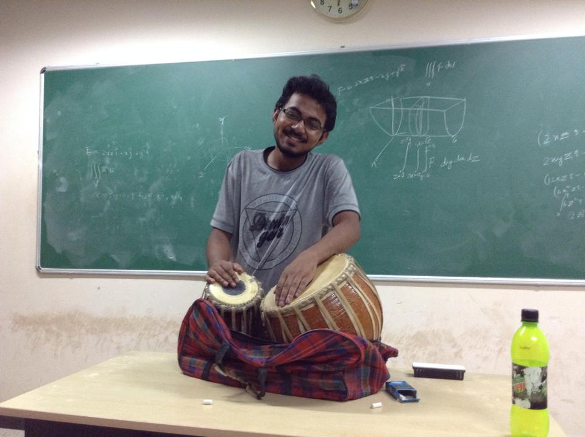

I was born in Kolkata and was brought up at Narwapahar, a small hamlet near Jamshedpur, the steel city of India. During my undergraduate period, I have traversed the south eastern parts of India, exploring and learning concepts of physics in various institutions.

I am an avid music lover, especially the variety of rhythms. I play the Indian drums known as the "Tabla". I am not an amateur photographer, but I like to take photos where I can play with perspectives, exploring different locations of the camera with respect to the subject. I enjoy movies, TV shows, which have a shrewd detective. I also like gaming, especially strategy games. I play DoTA 2 and Civilization.